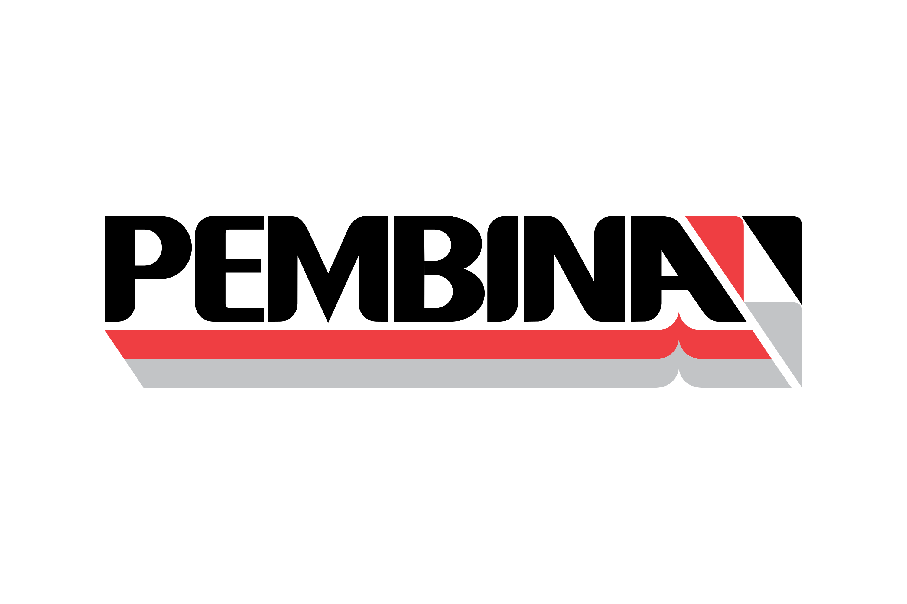

Project Engineer
Pembina Pipeline Corporation · Calgary, Alberta · Energy Infrastructure
Context
I worked as a Project Engineer at Pembina Pipeline Corporation in Calgary, Alberta, within a highly regulated, safety-critical energy infrastructure environment. The work sat upstream of execution, where projects needed to be sufficiently defined, scoped, and aligned before moving forward.
Operating in this setting meant working within tight regulatory, budgetary, and operational constraints. Progress depended on rigor and accuracy, ensuring technical assumptions were sound, risks were understood, and stakeholders across engineering, operations, commercial teams, and external vendors were aligned on feasible paths forward.
Goals
The goal of my work was to advance capital projects through early development by bringing clarity to technical scope, cost, schedule, and risk. This required translating high-level project concepts into well-defined inputs that could support informed decision-making and readiness for execution.
A key objective was aligning inputs across a broad set of stakeholders. I worked closely with commercial teams to understand project requirements and opportunities, partnered with operations to surface constraints, and collaborated with engineering to assess technical feasibility. These inputs needed to be clearly communicated to engineering consulting firms and external vendors to ensure proposed solutions were realistic, compliant, and aligned with project objectives.
A further goal was identifying key assumptions and risks early, so stakeholders could make informed decisions before committing capital or advancing projects downstream.
How I Worked
I approached project development by first building a clear understanding of project intent and constraints. This involved working closely with commercial teams to understand project objectives and opportunities, partnering with operations to surface practical and regulatory constraints, and collaborating with engineering to assess what was technically feasible.
I then translated these inputs into structured guidance for engineering consulting firms and external vendors. This meant clarifying scope, pressure-testing assumptions, and ensuring proposed solutions aligned with cost, schedule, and operational realities. A key part of the work was asking the right questions early to reduce downstream rework and avoid misalignment between stakeholders.
Throughout the process, I acted as a connector across internal teams and external partners, facilitating clear communication and surfacing risks and tradeoffs early. This approach helped ensure projects advanced through development with shared understanding, realistic expectations, and decision-ready inputs.
Key Decisions & Tradeoffs
A recurring decision was how far to advance project definition given uncertainty across scope, cost, and regulatory requirements. Pushing for excessive detail too early risked misallocating time and resources, while moving forward without sufficient clarity increased downstream risk. I focused on defining the level of detail needed to support informed decisions without overcommitting prematurely.
Another key tradeoff involved balancing commercial opportunity with operational and engineering constraints. Potential project opportunities often needed to be evaluated against real-world operating conditions, safety considerations, and feasibility limits. This required reconciling competing priorities and ensuring proposed solutions were realistic, compliant, and aligned with how assets would ultimately be operated.
Throughout project development, I also weighed speed against quality of alignment. Advancing projects efficiently required maintaining momentum while ensuring stakeholders shared a common understanding of assumptions, risks, and tradeoffs.
Impact
My work contributed to the development of a $10M+ capital project portfolio across five concurrent projects, supporting initiatives as they progressed through early definition and decision stages. By clarifying scope, surfacing risks, and aligning inputs across commercial, operations, and engineering teams, projects were positioned for more informed evaluation before committing capital.
I coordinated inputs across multiple engineering consulting firms and external vendors, ensuring proposals reflected realistic cost, schedule, regulatory, and operational constraints. This reduced downstream uncertainty by giving stakeholders clearer visibility into tradeoffs and feasibility, improving overall project readiness and confidence in go-forward decisions.
What This Role Shaped
This role built a strong foundation in operating within constrained, high-stakes environments, where clarity, alignment, and disciplined planning are critical before execution begins. Working in project development sharpened how I evaluate feasibility, surface risks early, and translate diverse inputs into decision-ready frameworks.
These experiences shaped how I approach complex problem spaces today, particularly the importance of grounding decisions in realistic constraints while aligning stakeholders around a shared understanding. That foundation later informed how I operated in product roles at greater scale.